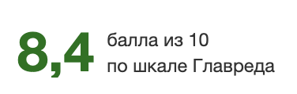
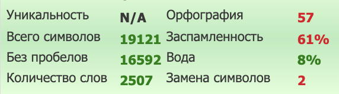

Провайдеры слотов для казино: ТОП-20 мировых и локальных разработчиков в 2026 году
От выбора игровых студий зависит удержание аудитории, легальный статус казино и экономика каталога. При подключении софта операторы оценивают лицензии провайдера, сертификаты, математику игр, доступные ГЕО и схему интеграции.
Важным фактором остается показатель RTP (теоретический процент возврата игроку). Разница в его конфигурациях влияет на маржинальность бизнеса и валовой игровой доход (GGR). Перед запуском RTP-версию проверяют по сертификату лаборатории и сверяют с настройкой в бэк-офисе, а допуск студии — по публичному реестру регулятора.
Данные актуальны на сентябрь 2026 года.
Провайдеры слотов казино и чем они занимаются
Провайдеры игрового софта для онлайн-казино создают контент — от механики до визуального оформления. Они отвечают за разработку, математику и легальный статус продуктов. Чтобы операторам не приходилось работать с каждой студией напрямую, игры обычно поставляются через агрегаторов, которые объединяют разный софт в единую интеграцию.
Процесс создания и поддержки слотов включает несколько этапов:
- Идея и сеттинг. Разработчики выбирают сюжет и адаптируют тематику под культурные особенности рынков.
- Визуальная и техническая часть. Команда создает графику, анимацию и звук, а также оптимизирует код под мобильные устройства на HTML5.
- Математическая модель. Студия настраивает ключевые параметры: частоту выигрышей (hit rate), волатильность, максимальный множитель (max win) и бонусные раунды.
- Сертификация. Математику игры и генератор случайных чисел (RNG) проверяют в независимых лабораториях для получения допусков в нужные страны.
- Интеграция. Настраиваются игровые серверы (RGS), после чего софт передается операторам через API.
- Сопровождение. Провайдеры переводят интерфейсы на локальные языки, собирают аналитику, запускают турниры и сетевые джекпоты.
Лучшие провайдеры казино: 10 мировых лидеров
В подборку вошли ведущие международные студии с надежной репутацией на регулируемых рынках, стабильным календарем релизов и широким географическим покрытием. Бренды перечислены без ранжирования: порядок не отражает популярность. Подробнее критерии оценки описаны в статье о том, как выбрать провайдера для онлайн-казино.
При работе с крупными брендами важно учитывать, что многие провайдеры казино выпускают один и тот же тайтл в нескольких математических версиях.
Перед подключением у провайдера запрашивают спецификацию игры (game sheet) и подтверждение доступной RTP-конфигурации для выбранного рынка.
Pragmatic Play
Разработчик известен высокой скоростью выпуска софта, сериями Sweet Bonanza, Gates of Olympus, Big Bass и турнирной механикой Drops & Wins. Студия лицензирована регуляторами Мальты (MGA) и Великобритании (UKGC). Серии бренда широко представлены в каталогах регулируемых рынков и подходят для базового слоя лобби.
Evolution
Компания специализируется на live-играх с живыми дилерами и объединяет под своим управлением известных разработчиков слотов: NetEnt, Red Tiger, Big Time Gaming и Nolimit City. В live-сегменте математика зависит от правил конкретной игры, а показатели RTP и волатильности слотов оценивают на уровне каждой входящей в холдинг студии. Для мультипродуктовых площадок это удобно: один контракт может открыть доступ к live-направлению и нескольким слот-студиям группы.
NetEnt
Портфолио бренда получило мировую известность за счет таких релизов, как Starburst и Gonzo's Quest. У классической версии Gonzo's Quest — 95,97% RTP и средняя волатильность, хотя в линейке разработчика представлены слоты с самыми разными математическими моделями. Студия входит в группу Evolution.
Nolimit City
Бренд сфокусирован на выпуске высоковолатильных слотов с фирменными механиками xWays и xNudge. Базовый RTP Whacked! — 96,07%; для отдельных рынков провайдер может предлагать версии с более низким RTP. Игры чаще выбирают площадки с аудиторией хайроллеров и любителей экстремальных множителей. Студия входит в Evolution, а max win проверяют по конкретному тайтлу.
Play'n GO
Шведская студия одной из первых сделала ставку на мобильные игры и создала один из главных хитов индустрии — высоковолатильный слот Book of Dead с механикой расширяющихся символов в бонусном раунде. Компания работает по лицензиям Великобритании, Мальты и Гибралтара.
Playtech
Один из старейших представителей индустрии, работающий с 1999 года. Команда известна брендированными сериями, развитой линейкой live-игр и сетью прогрессивных джекпотов Age of the Gods, а в структуру холдинга входит известная студия Quickspin. Деятельность регулируется лицензиями MGA и UKGC. Это удобно платформам, которые развивают сразу несколько вертикалей: слоты, live и джекпоты.
Hacksaw Gaming
Выпускает игры в минималистичном стиле с крупными множителями. В Wanted Dead or a Wild заложена высокая волатильность, max win 12 500x, а теоретический RTP имеет четыре конфигурации — 96,38%, 94,55%, 92,33% и 88,42%. Разработчик лицензирован MGA и UKGC, а поставки идут через собственный сервер RGS. Перед подключением стоит уточнить, какие из RTP-профилей разрешены на целевом рынке.
Relax Gaming
Бренд совмещает выпуск собственных хитов, включая серию Money Train и тайтлы с механикой bonus buy, с масштабной дистрибуцией партнерского софта по программам Silver Bullet и Powered By Relax. Компания имеет лицензии MGA, UKGC и ряд локальных допусков, а математические параметры определяются индивидуально для каждого релиза. Через Relax Gaming оператор получает игры небольших студий-партнеров в рамках одной интеграции.
Push Gaming
Выпускает относительно небольшой каталог игр с авторскими механиками. Среди узнаваемых релизов — кластерный слот Jammin' Jars с перемещающимися wild-множителями и Razor Shark. Провайдер работает по лицензиям Мальты, Великобритании и располагает локальными допусками в ряде стран.
ELK Studios
Разработки студии примечательны сериями Nitropolis и Pirots, встроенными стратегиями и опцией X-iter с заранее заданными режимами. Студия входит в Light & Wonder и лицензирована на Мальте, в Великобритании и Румынии. Из-за юридических ограничений британского рынка (запрет автоплея и покупки бонусов) доступный набор функций зависит от конкретной локализации софта.
Таблица. Сравнительный анализ мировых провайдеров слотов казино
| Провайдер | Ключевые лицензии | RTP-конфигурации | Волатильность | Группа / Интеграция |
|---|---|---|---|---|
| Pragmatic Play | UKGC, MGA | Несколько версий на выбор | От низкой до высокой | Прямая / через агрегаторов |
| Evolution | UKGC, MGA | Live / см. студии группы | Live / см. студии группы | Прямая / через агрегаторов |
| NetEnt | UKGC, MGA | Индивидуальные для тайтла | Преимущественно средняя | Входит в Evolution (Прямая / API агрегаторов) |
| Nolimit City | UKGC, MGA | Несколько версий на выбор | Экстремально высокая | Входит в Evolution (Прямая / API агрегаторов) |
| Play’n GO | UKGC, MGA, Gibraltar | Индивидуальные для тайтла | Смешанная | Прямая / через агрегаторов |
| Playtech | UKGC, MGA | Зависят от типа продукта | От низкой до высокой | Включает Quickspin / Единый API |
| Hacksaw Gaming | UKGC, MGA | Четыре профиля на выбор | Преимущественно высокая | Через собственный сервер RGS / агрегаторов |
| Relax Gaming | UKGC, MGA | Индивидуальные для тайтла | От средней до высокой | Собственный хаб (включая Silver Bullet) |
| Push Gaming | UKGC, MGA | Несколько версий на выбор | Средняя и высокая | Прямая / через агрегаторов |
| ELK Studios | UKGC, MGA, Romania | Зависят от локализации | Средняя и высокая | Входит в Light & Wonder (Прямая / через агрегаторов) |
Провайдеры онлайн-казино с региональной специализацией
Крупные международные бренды не всегда одинаково эффективны в разных регионах. Локальные провайдеры игровых автоматов помогают операторам учитывать язык, культурные особенности и привычки местной аудитории. Их софт позволяет точечно дополнить базовый каталог, повышая удержание пользователей на целевых рынках.
PG Soft — Азия и Бразилия
Студия создает вертикальные слоты, ориентированные на смартфоны. Ключевые тайтлы — Mahjong Ways и Fortune Tiger, причем для последнего заявлены RTP 96,81% и средняя волатильность. Деятельность подтверждена лицензией MGA и независимыми сертификатами. В Бразилии слоты серии Fortune занимали верхние строчки чартов регулируемого рынка — подробнее в разделе о трендах.
Habanero — Азия и Африка
Habanero развивает азиатские и мифологические тематики; среди хитов — Koi Gate и Hot Hot Fruit. Для Koi Gate доступны несколько RTP-версий, поэтому конфигурацию и волатильность сверяют по game sheet провайдера. Компания имеет лицензии и регистрации на Мальте, в Румынии, Швеции и ряде других юрисдикций; Южная Африка указана на официальном сайте среди сертифицированных рынков. Каталог подходит операторам, которым нужен локализованный контент для азиатской аудитории и присутствие на отдельных регулируемых рынках Африки.
Spribe — Латинская Америка и Африка
Разработчик знаменит краш-игрой Aviator, которая конкурирует с классическими слотами за место в лобби и пользовательскую сессию. Результаты в игре можно проверить с помощью криптографической технологии Provably Fair. Компания обладает лицензией UKGC, а на рынках Латама и Африки софт сертифицируется по требованиям конкретных стран. Aviator подходит операторам, которым нужен отдельный crash-сегмент в дополнение к классическому игровому каталогу.
Belatra Games — Латинская Америка и международные рынки
Провайдер начинал с производства наземных игровых автоматов в 1993 году, а сегодня известен такими релизами, как Lucky Drink, Piggy Bank и современным хитом Mummyland Treasures. Игры провайдера сертифицированы лабораторией GLI. Опыт с 1993 года и адаптация игр под Латинскую Америку позволяют сочетать в каталоге классику и игры под вкусы местной аудитории.
BGaming — крипто-ориентированный сегмент
Студия совмещает выпуск слотов и казуальных игр, внедрив алгоритм Provably Fair в часть своего портфолио. Линейку представляют такие хиты, как Aztec Magic Deluxe и Plinko XY. Разработчик изначально ориентирован на поддержку фиатных и цифровых валют, а историческая связь с платформой SOFTSWISS упрощает подключение на мультивалютных площадках.
3 Oaks Gaming — Восточная Европа и международные рынки
Провайдер фокусируется на создании джекпотных слотов с популярной механикой Hold & Win, включая такие релизы, как 3 Clover Pots и 4 Clover Pots. Помимо UKGC и разрешения на работу в Греции, софт компании сертифицирован для ряда регулируемых юрисдикций. Продукция бренда востребована для привлечения аудитории, нацеленной на классические бонусные раунды с удержанием символов.
Amusnet — Балканы и Южная Европа
Каталог студии состоит из традиционных фруктовых слотов и многоуровневых джекпот-систем. В версии 40 Bulky Fruits – Golden Coins Link бонус Hold & Spin дает шанс на многоуровневые джекпоты вплоть до Grand; RTP и волатильность этой версии сверяют по game sheet. Каталог подходит операторам, работающим с аудиторией, которая предпочитает классические фруктовые слоты и ретро-тематику. Студия имеет лицензию MGA и работает на ряде регулируемых европейских рынков.
Greentube (NOVOMATIC) — DACH
Локальные провайдеры игровых автоматов для региона DACH (Германии, Австрии и Швейцарии) переносят в онлайн известные наземные серии, включая такие хиты холдинга, как Book of Ra и Sizzling Hot. Продукция адаптирована под требования немецкого регулятора GGL: в софте реализован ручной запуск, пятисекундный спин и отключены джекпоты. Базовый лимит ставки — €1; с 1 июля 2026 года оператор с разрешения GGL может поднять его до €3 для игроков от 21 года и до €5 для тех, у кого за 90 дней не выявлено признаков проблемной игры. Продукты компании ориентированы на операторов, развивающих легальный бизнес в Центральной Европе.
Blueprint Gaming — Великобритания и Ирландия
Студия известна своими брендированными релизами и интеграцией механики Megaways, яркими примерами которых стали слоты Return of Kong и Eye of Horus. Продукция адаптирована под требования UKGC и британские лимиты ставок: максимум £2 для пользователей 18–24 лет и £5 для аудитории старше 25 лет. С учетом строгих ограничений Великобритании на покупку бонусов и автоплей, софт предлагает математические модели, допущенные на британском рынке; в Ирландии действуют собственные требования регулятора GRAI. Отдельные игры Blueprint доступны в Онтарио, а в Альберте студия зарегистрирована как поставщик игровых систем.
IGT — США
Компания переносит классические физические автоматы в цифровой формат, а ее главными онлайн-сериями остаются Cleopatra и Wheel of Fortune. В США сертификация софта проводится строго на уровне конкретных штатов. После слияния цифровой бизнес IGT и Everi перешел под управление фондов Apollo, сохранив на рынке единый бренд IGT. Интеграция этого портфолио востребована операторами для привлечения американской аудитории, лояльной к культовым наземным франшизам.
Связки провайдеров онлайн-казино под популярные ГЕО
Грамотная B2B-стратегия требует комбинирования крупных международных брендов и регионального софта, однако финальный выбор всегда зависит от регуляции конкретной страны. Поскольку игровые провайдеры казино работают по разным наборам лицензий, перед интеграцией операторам необходимо индивидуально проверять юридический статус поставщика и доступность каждого релиза для целевой юрисдикции. Логика этого процесса разобрана в материале как собрать портфель провайдеров.
Таблица. Оптимальные связки провайдеров онлайн-казино под целевые рынки и модели лицензирования
| ГЕО / Модель | Базовый каталог | Локальный софт | Юридические особенности |
|---|---|---|---|
| Великобритания | Pragmatic Play, Hacksaw Gaming, Push Gaming | Blueprint Gaming | UKGC, запрет автоплея и покупки бонусов, лимиты ставок £2/£5 |
| Германия | Pragmatic Play, Hacksaw Gaming | Greentube | GGL, ручной запуск, 5 секунд на спин, лимиты €1/€3/€5, запрет джекпотов |
| Бразилия | Pragmatic Play, Play’n GO, Push Gaming | PG Soft | Федеральный регулятор SPA, обмен данными через SIGAP, локальный комплаенс |
| Канада (Онтарио / Альберта) | Hacksaw Gaming, Push Gaming | Blueprint Gaming | Провинциальные регистрации: AGCO в Онтарио, AGLC в Альберте |
| Латам (Мексика / Колумбия / Перу) | Pragmatic Play — Мексика, Перу; Hacksaw Gaming — Мексика; Push Gaming — Колумбия | Belatra Games, Spribe | Оценка допусков по конкретной стране (SEGOB в Мексике, Coljuegos в Колумбии, MINCETUR в Перу) |
| Кюрасао (модель лицензирования) | Не применяется | Поставщики с требуемым статусом по правилам CGA | Новые правила LOK, требования CGA к поставщикам услуг |
Nolimit City и Hacksaw Gaming можно использовать как нишевый слой, а Evolution — для live-контента, если поставщик и конкретный продукт допущены в выбранной юрисдикции.
В Бразилии федеральное регулирование контролируется ведомством SPA, а интеграция платформ идет через систему мониторинга SIGAP. На Кюрасао в рамках реформы LOK надзор полностью перешел к органу Curaçao Gaming Authority (CGA), что повлекло за собой аудит поставщиков услуг.
СНГ рассматривается только как аналитическая категория: статус онлайн-казино и допуск поставщиков проверяют отдельно для каждой страны.
Тренды портфелей провайдеров казино в 2026 году
Ассортимент игр на платформах меняется под влиянием реформ регуляторов, слияния корпораций и новых привычек пользователей.
- Краш-игры как самостоятельная вертикаль. Быстрый контент вроде Aviator (Spribe), Spaceman и Big Bass Crash (Pragmatic Play), JetX (SmartSoft) и Cash or Crash (Evolution) конкурирует с классическими слотами за время игровой сессии. Aviator от Spribe стал одной из самых узнаваемых crash-игр за пределами крипто-сегмента, а сам формат закрепился на регулируемых рынках. Так, по рейтингу Slot Intel для Бразилии, в 2025 году Spaceman входил в топ-10 игр по позициям в лобби операторов, а Aviator в отдельные недели занимал первое место. Операторы все чаще выделяют crash-игры в отдельный раздел лобби.
- Укрупнение рынка и готовые пакеты софта. Консолидация меняет техническую сторону интеграции. Evolution в 2020 году приобрела NetEnt вместе с Red Tiger, в 2021-м — Big Time Gaming, а в 2022-м — Nolimit City. В результате один контракт может открывать доступ сразу к нескольким студиям. Инвестиционная группа Apollo в июле 2025 года объединила игровой и digital-бизнес IGT с Everi в рамках сделки примерно на $6,3 млрд, вошедшей в крупнейшие сделки iGaming 2025 года. Объединенная компания работает под брендом IGT, а лотерейный бизнес получил название Brightstar Lottery. Летом 2026 года Bragg завершила покупку Drayton International примерно за $9 млн с оплатой акциями; в сделку также вошли доли Drayton в нескольких лицензированных игровых студиях. Этот и другие примеры включает актуальный обзор сделок в гемблинге за 2026 год. Игровые провайдеры казино все чаще входят в крупные группы. Для оператора это сокращает количество отдельных подключений, но одновременно усиливает коммерческое влияние холдингов.
- Глубокая культурная адаптация. Локализация определяет позиции игр в чартах. Как показывают данные Slot Intel за июль 2025 года, серия Fortune от PG Soft занимала шесть из семи верхних позиций рейтинга регулируемого рынка Бразилии, а Tigre Sortudo от Pragmatic Play также входил в число лидеров. В сентябре 2025 года Bufalo Da Fortuna от RubyPlay стал игрой №1 среди новинок недели. При оценке студии важно учитывать ее готовность адаптировать тематики и названия под конкретный рынок, а также выпускать эксклюзивный контент.
- Ужесточение правил комплаенса. Развитие регулируемых рынков усложняет B2B-допуски. В Бразилии с 1 января 2025 года рынок работает по федеральным лицензиям регулятора SPA, а передача данных идет через государственную систему SIGAP. Канадская Альберта запустила регулируемый рынок iGaming 13 июля 2026 года, став второй провинцией после Онтарио, где работают частные операторы. На Кюрасао закон LOK действует с 24 декабря 2024 года, а лицензии напрямую выдает Curaçao Gaming Authority. Для поставщиков критичных игровых услуг, зарегистрированных на Кюрасао, требование о supplier license вступает в силу через два года после начала действия LOK — 24 декабря 2026 года. Зарубежным поставщикам лицензия не нужна, но к этой дате они должны быть зарегистрированы в CGA: лицензиаты не вправе работать с незарегистрированными компаниями. К критичным поставщикам относятся, в частности, поставщики онлайн-слотов и live-игр. Легальный статус софта в конкретном ГЕО теперь важнее известности бренда. Изучить полный перечень правил можно, открыв требования Кюрасао к поставщикам игр.
Заключение
Универсального топа не существует: лучшие провайдеры казино подбираются с учетом рынка, лицензии и модели монетизации. При сборке портфеля провайдеры слотов казино распределяются по ролям: глобальные студии дают базовый каталог, локальные закрывают особенности ГЕО, а лицензии и сертификаты проверяют до интеграции. Практический следующий шаг — сопоставить критерии выбора и техническую схему подключения до подписания договора.
Материал предназначен для операторов и носит информационный характер. Он не адресован пользователям из России, где организация азартных игр в интернете запрещена. 18+. Азартные игры могут вызывать зависимость.

